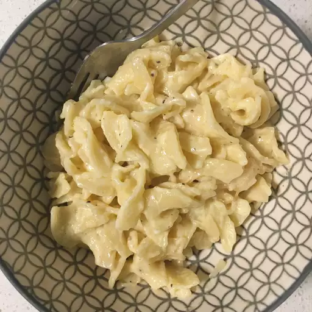

Lemon Pasta

Description
Delicious lemon pasta dish, a twist on a regular alfredo style pasta to change up your regular dinner
Ingredients
- 100g Pasta
- 1 Litre Water
- 10g Salt
- 20g Butter
- 1-2 Lemons
- Optional 30g Parmigiano Reggiano, Garlic, Black Pepper
Steps
- Measure out pasta of choice Fettucine or Tagliatelle typically works best
- Bring water to boil, stir in salt then add pasta to cook for 6-10 minutes
- Whilst pasta cooks, slice and juice lemons, saving the zest of one lemon for garnishing
- Just before pasta cooked, reserve some pasta water to use for the sauce
- Heat butter in pan over a medium heat, gradually adding more cubes and pasta water until desired consistency of sauce acquired Add garlic here if desired
- Once pasta cooked, drain and add to the butter sauce
- Add the juice of the lemons to the pasta and mix through for a few minutes till all combined
- Plate up and serve with a garnish of lemon zest. Parmigiano Reggiano and Black Pepper highly recommended.